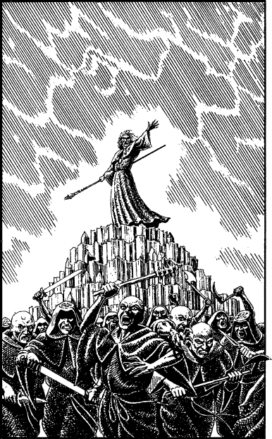

345
Time passes and you sense flashing motes of light streaking past your closed eyes, and faint far away sounds come dimly to your ears through the howling wind. Then, as suddenly as it began, the sensation of falling ceases and you feel yourself lurching forwards onto wet, rocky soil. Rain spatters your face and, when you open your eyes, you see that you have returned to Magnamund … and to terrible danger.
‘Kill him!’ It is the voice of Arch Druid Cadak. You have emerged from the Shadow Gate and now you lie on the ground between the great shimmering arch and Cadak’s crystal dais. You have only just found your feet when a growling horde of vengeful acolytes close in upon you, eager to fulfil their leader’s wish.

Acolytes of Vashna: COMBAT SKILL 40 ENDURANCE 45
If you choose to use the Deathstaff as your weapon during this fight, you may add 10 to your COMBAT SKILL. 17
If you win the combat (using the Deathstaff), turn to 26.
If you win the combat (without using the Deathstaff), turn to 324.
Footnotes
[17] The Deathstaff is not one of the classes of Weapons that Kai Lords receive training in, and as such Weaponmastery or Grand Weaponmastery bonuses may not be available for it. Alternatively, you may decide that you can add the Grand Weaponmastery COMBAT SKILL bonus if you possess Grand Weaponmastery in Quarterstaff or Spear (cf. Section 77 of The Deathlord of Ixia where the Deathlord ‘slashes with the sharp tip of the Deathstaff at your face’).